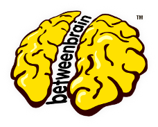

Achieving Responsiveness
 Matt Thomas betweenbrain.com/talks/achieving-responsivenessRWD Defined
essentially indicates that a web site is crafted to use [CSS3] media queries... to adapt the layout to the viewing environment... [so that] users across a broad range of devices and browsers will have access to a single source of content.wikipedia.org/wiki/Responsive_Web_Design
For Example
/* Default styles for small screens */
body {
font-size : 76%;
}
#body-container {
width : 95%;
}
@media only screen and (min-width: 40em /*480px*/) {...}
@media only screen and (min-width: 50em /*600px*/) {...}
@media only screen and (min-width: 64em /*768px*/) {...}
@media only screen and (min-width: 82.6em /*992px*/) {...}
@media only screen and (min-width: 115em /*1382px*/) {...}
That's it...
right?
In the beginning...
...there was Ethan Marcotte
Responsive Web Design - A List Apart May 25, 2010 alistapart.com/articles/responsive-web-design/

And then there was...
...Ethan Marcotte
A Dao of Flexibility - An Event Apart Nov 2, 2010
The presentation that launched a thousand redesigns!
http://vimeo.com/34662135

But wait, there was also...
...Less Framework (Joni Korpi)
Less Framework [v2] uses inline css3 media-queries to switch between three layouts.
lessframework.com/v2/
body {width: 696px;}
@media only screen and (max-width: 767px) {
body {width: 264px;}
}
@media only screen and (min-width: 1224px) {
body {width: 1128px;}
}Not to mention...
MOBILE FIRST
abookapart.com/products/mobile-first

Holistic Overview
Press ESC to enter the slide overview!
Works in Mobile Safari
Try it out! You can swipe through the slides pinch your way to the overview.
Marvelous Unordered List
- No order here
- Or here
- Or here
- Or here
Fantastic Ordered List
- One is smaller than...
- Two is smaller than...
- Three!
<section data-markdown>
## Markdown support
For those of you who like that sort of thing.
Instructions and a bit more info available [here](https://github.com/hakimel/reveal.js#markdown).
</section>
Transition Styles
You can select from different transitions, like:
Global State
Set data-state="something" on a slide and "something"
will be added as a class to the document element when the slide is open. This lets you
apply broader style changes, like switching the background.
"blackout"
"soothe"
Custom Events
Additionally custom events can be triggered on a per slide basis by binding to the data-state name.
Reveal.addEventListener( 'customevent', function() {
console.log( '"customevent" has fired' );
} );
Clever Quotes
These guys come in two forms, inline:
The nice thing about standards is that there are so many to choose from
and block:
For years there has been a theory that millions of monkeys typing at random on millions of typewriters would reproduce the entire works of Shakespeare. The Internet has proven this theory to be untrue.
Pretty Code
function linkify( selector ) {
if( supports3DTransforms ) {
var nodes = document.querySelectorAll( selector );
for( var i = 0, len = nodes.length; i < len; i++ ) {
var node = nodes[i];
if( !node.className ) ) {
node.className += ' roll';
}
};
}
}
Courtesy of highlight.js.
Intergalactic Interconnections
You can link between slides internally, like this.
Fragmented Views
Hit the next arrow...
... to step through ...
any type- of view
- fragments
Spectacular image!

Export to PDF
Presentations can be exported to PDF, below is an example that's been uploaded to SlideShare.